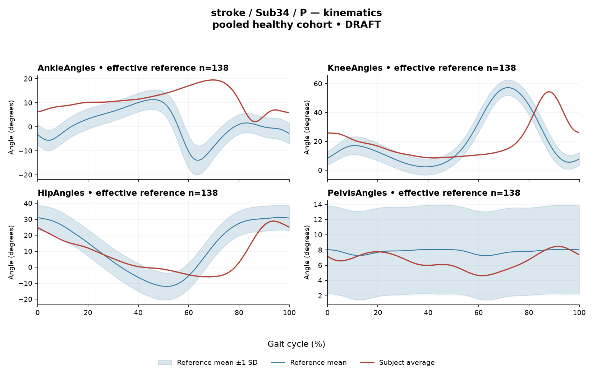

RCE1C7A987393DB28
rater3 / 96 of 150 / Case stroke_Sub34_P / Review row 97
Report: verbatim text
Text file for exact quotations# Gait Report Interpretation — Sub34_P **Interpretation version:** limited-evidence-v3.1-candidate **Scope:** Research-level interpretation of a supplied quantitative summary. This is not a diagnosis, not a severity grading, and not a basis for treatment selection. --- ## 1. Objective Findings **Participant and side.** Sub34_P is a participant in the stroke cohort; the analyzed limb is the **paretic** side. The released cycle for this limb runs from one initial contact of that limb (0%) to the next initial contact (100%); these endpoints are successive occurrences of the same event, not a single instant. No intermediate gait event (including toe-off) is supplied in this input, so all timing below is expressed only as a percentage of the analysis cycle. **Spatiotemporal values as supplied.** - Gait speed **0.22 m/s**, which falls in the "household ambulator (<0.4 m/s)" speed band. This label denotes a speed band only; it does not measure walking independence, safety, or real-world community mobility. - Cadence **61.0 steps/min**. - Step length symmetry index **+4.2%**, computed with the **successive-footfall** definition (each heel at its own initial contact). With the stated sign convention (200×(paretic − non-paretic)/(paretic + non-paretic)), a positive value indicates the paretic step measured slightly longer than the non-paretic step by this index. The alternative instantaneous definition can yield a different value for some subjects, so this number should be read as definition-specific rather than as a general statement of step-length asymmetry. **Critical comparability limit.** The healthy reference cohort's self-selected speeds span 0.80–1.79 m/s. At 0.22 m/s this participant walks **well below that floor**, so **no speed-matched healthy reference exists in this dataset**. The reference actually used for the deviation scores here is a pooled set of 138 healthy subjects (1001 phase points, source: main_cohort_excel), pooling both body sides and all ages and not matched to this participant. Every reference comparison in Sections 2 and 3 therefore conflates very-slow-walking effects with stroke-related control changes, and these two contributions cannot be separated from the supplied data. Deviations should be described as differences from this pooled empirical reference; they do not by themselves establish a disease effect, a mechanism, or a clinical diagnosis. **Channels and fields supplied / not supplied.** - Supplied: sagittal-plane kinematics for ankle, knee, hip and pelvis (ROM and Gait Variable Score); ensemble-averaged EMG envelopes with detected above-threshold intervals for GAS, RF, VL, BF, ST, TA and ERS; two co-contraction indices; the spatiotemporal values above. - **Not supplied in this input** (not the same as documented absent from the source release): age, sex, individual gait events including toe-off, time post-stroke, stroke clinical scores, non-paretic-side data, matched muscle-specific normal timing references, stride-level variability, and raw-signal quality checks. - **Not included by design:** coronal- and transverse-plane joint angles — all kinematic values here are sagittal only. --- ## 2. EMG Envelope and Threshold Findings **How these numbers must be read.** The curves are ensemble-averaged envelopes. Normalization uses a shared maximum across the available strides for each participant, side and muscle (in the checked stroke release the denominator is participant-, side- and muscle-specific and is not shared between sides); individual strides were not rescaled to their own peaks, and no further amplitude normalization was applied. Amplitudes are therefore **relative envelope values**, not neural drive, force or strength, and muscles must not be ranked as stronger or weaker from them. An averaged curve cannot show stride-to-stride variability, so none of the intervals below should be assumed to recur identically in every stride. "Above-threshold interval" means the *averaged* envelope exceeded 20% of that same curve's own peak for at least 3% of the cycle; it is not a physiological onset, offset, contraction duration, or evidence of inactivity outside the listed windows. An interval written with X > Y wraps across the 100%→0% cycle boundary, i.e. the mean envelope remained above threshold across the cycle-defining initial-contact boundary. | Muscle | Retained interval(s) (% cycle) | Coverage | Peak rel. amplitude | Max \|z\| vs pooled reference | |---|---|---|---|---| | GAS | 90%–89% (wraps) | 99% | 0.34 | 10.0 above, at 77% | | RF | 80%–85%; 95%–65% (wraps) | 75% | 0.49 | 2.6 below, at 6% | | VL | 94%–65% (wraps) | 71% | 0.42 | 3.4 below, at 6% | | BF | 89%–39% (wraps) | 54% | 0.48 | 1.9 below, at 87% | | ST | 51%–47% (wraps) | 99% | 0.31 | 2.0 below, at 87% | | TA | 52%–61%; 62%–65%; 80%–22% (wraps) | 55% | 0.48 | 3.8 below, at 72% | | ERS | 0%–100% | 100% | 0.52 | 5.2 above, at 82% | **Coverage and boundary continuity.** All seven mean envelopes were above threshold across the cycle boundary. Coverage is high and near-continuous for GAS and ST (each reported as 99% of the cycle in a single wrapping interval); because these are rounded values, the supplied evidence does not establish whether a short below-threshold segment exists, and none should be asserted either way. For ERS the single retained interval spans the full analysis window with coverage reported as 100%; its listed onset of 0% is the analysis-window boundary, not a physiological onset. RF, VL, BF and TA show lower coverage (75%, 71%, 54%, 55%) with one or more retained intervals; for TA the detection returned three separate retained windows (52%–61%, 62%–65%, and a long wrapping window 80%–22%), meaning brief excursions of the *mean* envelope below the 20%-of-own-peak threshold between them. No retained interval and rounded coverage alone do not establish quiet muscle. **Anatomical naming without phase assignment.** The recorded muscles include an ankle plantarflexor (GAS), a dorsiflexor (TA), knee extensors (RF, VL), knee flexors/hip extensors (BF, ST) and an erector spinae channel (ERS). Because neither toe-off nor any other intermediate event is supplied, no interval above may be assigned to stance or swing, to loading response, mid-stance or pre-swing, or to a function such as clearance, push-off or weight acceptance, and a conventional 60/40 split must not be substituted. For the same reason, none of this timing can be called normal, early, delayed or prolonged. **Max |z| locations.** Max |z| is an extreme-value statistic — the largest standardized difference from the phase-specific pooled reference mean across all 1001 phase points — and its location is not necessarily where the envelope peaks and not a gait event. "Above/below reference" refers to that phase-specific reference mean, not to a healthy percentile limit. The conventional 2-SD rule does not apply: in this dataset every one of 109 healthy controls exceeds |z| = 2 on at least one muscle, and the per-muscle healthy 95th percentiles for this statistic run 3.65 (ERS) to 4.61 (TA), higher under leave-one-out. Against that backdrop, the RF (2.6), BF (1.9) and ST (2.0) values sit below the lowest of those per-muscle percentiles; VL (3.4) and TA (3.8, below reference at 72%) fall inside the range spanned by those percentiles — for TA, below its own 95th percentile of 4.61. The **GAS value of 10.0 above reference at 77%** and the **ERS value of 5.2 above reference at 82%** (ERS 95th percentile 3.65) are the two largest standardized differences and exceed the quoted per-muscle percentile range. These are descriptive differences from a pooled, non-speed-matched reference at a walking speed with no reference support; they do not establish abnormal physiology, spasticity, a compensation, or any diagnosis. **Co-contraction indices.** CCI here is the Falconer–Winter index computed over the full continuous normalized envelopes (2×common area / summed areas) as a **whole-cycle overlap index**. It is not simultaneous activation time, not muscular force, and not a phase-specific result; it can be non-zero even where detected bursts do not overlap, since sub-threshold envelope area contributes. - **TA vs GAS = 0.52** — within the supplied healthy interval 0.24–0.59, above the supplied median of 0.39 and closer to the upper endpoint. - **RF vs BF = 0.77** — within the supplied healthy interval 0.48–0.83, above the supplied median of 0.68 and nearer the upper endpoint. Lying inside these empirical intervals does not establish physiologically normal co-activation or normal muscle function, just as a value outside them would not establish pathological co-activation, stiffness or impaired motor control. These values depend on the normalization and envelope methods used here and must not be compared with CCI values or thresholds from other studies or algorithms; the same pooled, non-speed-matched limitation applies to the reference interval itself. --- ## 3. Kinematic and Reference Comparisons All values are **sagittal plane only**. | Channel | ROM (deg) | Gait Variable Score | |---|---|---| | Ankle | 17.4 | 13.95 | | Knee | 45.8 | 20.92 | | Hip | 34.8 | 11.35 | | Pelvis | 3.8 | 1.58 | **Composite (GPS-like) = 13.82**, the RMS of the per-joint GVS values over the supplied sagittal channels. This is not the validated 9-variable GPS and is not interchangeable with it. The supplied composite reference is a median of 5.1 with a 95th percentile of 10.7; this participant's value is numerically above both. Those figures are **pooled calibration percentiles**, not matched leave-one-out normal limits, and they are drawn from a cohort that is neither age- nor speed-matched to this participant — whose speed lies below the reference cohort's range entirely. **What GVS and the composite can and cannot say.** Both are summary magnitudes of difference from the stated reference waveforms. Neither indicates the direction of the waveform difference (e.g. more flexion vs more extension), and neither localizes the difference to a portion of the cycle. By magnitude, the knee channel contributes the largest per-joint deviation (20.92), followed by ankle (13.95) and hip (11.35), with pelvis smallest (1.58); this ordering describes the deviation scores only, not a mechanism or a site of impairment. **ROM.** The reported ROM values, including the small sagittal pelvic excursion of 3.8 deg, are raw excursions. ROM alone does not establish a clinical restriction without an appropriate matched comparison, and no ROM reference values are supplied here. The low pelvic GVS alongside small pelvic ROM should not be read as confirmation that pelvic motion is normal, nor the high knee GVS as a joint-specific pathology. **Overall.** The kinematic deviations, like the EMG deviations, are differences from a pooled empirical reference recorded at speeds this participant does not reach. Slow-walking effects and stroke-related control changes cannot be separated from these data, and no clinical severity grade, statistical significance, or disease effect can be derived from the comparison. --- ## 4. Questions for Further Clinical Assessment These are open questions raised by what is *not* contained in this summary; none presupposes that the mechanism or measurement issue in question has been observed. 1. Are individual gait events for this limb — particularly toe-off — available in the release? Without them, none of the EMG intervals can be placed within stance or swing, which is the main barrier to phase-level interpretation here. 2. Is a non-paretic-side dataset available for this participant? Because the EMG normalization denominator is side-specific, between-side envelope amplitudes would not be directly comparable, but interval structure, coverage and CCI could be examined descriptively. 3. Can a reference subgroup walking at comparably low speed be identified or constructed? If not, is a within-subject or speed-controlled comparison feasible, given that no speed-matched reference exists in this dataset? 4. Could the elevated GAS and ERS standardized differences reflect measurement factors such as electrode placement, crosstalk, baseline noise, or the per-muscle self-peak normalization denominator — and are raw-signal quality checks, stride counts, and per-stride envelopes available to examine this? None of these has been assessed in the supplied summary. 5. Is stride-level data available to characterize variability? The averaged curves used here cannot address consistency of the interval pattern across strides. 6. Would the step length symmetry index change materially under the instantaneous definition, and are both values retrievable for this participant? 7. Are coronal- and transverse-plane kinematics recorded? The present composite is sagittal-only and does not represent out-of-plane deviation. 8. Are participant descriptors relevant to interpretation — age, sex, time post-stroke, clinical scores, assistive-device or orthosis use during capture — documented in the release for this participant, and does anything in the capture record indicate how the reported speed and cadence were obtained?
Coverage rows
| Excel row | ID | Required content | Components |
|---|---|---|---|
| 549 | R115 | Describe walking speed 0.22 m/s and that it is below the stated 0.80 m/s reference floor; no reference at this speed is supplied. | AND: displayed speed and that it lies below the 0.80 m/s reference floor, so no speed-supported healthy reference exists in this dataset. Optional: cadence, speed-band label (not a functional claim). One sentence may also serve the comparability half of G03. |
| 550 | R116 | Identify the knee as the leading GVS difference AND another lower-limb difference using ankle OR hip. Exact GVS values are optional; identify the findings as reference-relative sagittal summary differences. | AND: knee as leading AND (ankle OR hip). Stating which joint is larger is optional; asserting the reverse order is an error. Exact GVS values are optional; no waveform direction, phase or restriction is required. |
| 551 | R117 | Describe GAS envelope above its phase-specific reference mean at approximately 77% of the analysis cycle (displayed max |z| 10.0). Within each route, muscle identity AND mean-relative direction AND approximate cycle location are required. Exact max-|z| repetition is optional. | Required for each route: muscle identity AND direction relative to the phase-specific reference mean AND approximate cycle location. Optional: exact max |z| value, comparison with the supplied endpoint span (descriptive only). Prohibited: percentile classification, gait phase, physiological onset, severity. |
| 552 | R118 | Describe EITHER the ERS envelope above its phase-specific reference mean at approximately 82% of the analysis cycle (displayed max |z| 5.2), OR the TA envelope below its phase-specific reference mean at approximately 72% (displayed max |z| 3.8), OR the VL envelope below its phase-specific reference mean at approximately 6% (displayed max |z| 3.4). One complete route suffices. Within each route, muscle identity AND mean-relative direction AND approximate cycle location are required; exact magnitudes are optional. | OR: three routes. Required for each route: muscle identity AND direction relative to the phase-specific reference mean AND approximate cycle location. Optional: exact max |z| value, comparison with the supplied endpoint span (descriptive only). Prohibited: percentile classification, gait phase, physiological onset, severity. A below-mean finding must not be read as weakness. |
| 553 | R120 | Describe the supplied successive-footfall step-length index 4.2% and its meaning: the paretic step is longer. | AND: displayed index and the direction supported by its sign. Optional: formula, definition wording. Acceptable phrasing for small displayed values: "a small difference with the paretic step slightly shorter/longer" (not a cutoff). Prohibited: restating the index as a percentage shortening (E01), severity grades, whole-gait symmetry generalization (E07 issue, not an omission). |
| 554 | G03 | Express a meaningful limitation of reference comparability AND why the comparison cannot establish disease effects or clinical diagnosis; for controls it cannot establish disease or overall normality. One statement may also support a case requirement. | AND: comparability and inference limitations |
Exact system input
Saved fileDraft a research gait-report interpretation for a physical therapist or physiatrist using only the supplied quantitative summary. This is a limited-evidence interpretation task, not diagnosis or treatment selection. Rules: - Describe the participant's actual group and side, available findings, and missing channels accurately. Healthy-group membership does not prove normal physiology; deviations from an empirical reference do not by themselves establish disease. - Treat detected EMG intervals and coverage as properties of an averaged envelope under the stated threshold and duration rule. Do not convert them into physiological onset, offset, duration, continuous contraction, or inactivity outside the intervals. You may describe reported coverage, retained intervals and boundary continuity at the mean-envelope level. Do not infer the same pattern in every individual stride. Say no below-threshold segment only when the supplied evidence establishes that; a rounded coverage value or no retained interval alone does not establish it. - Individual toe-off and matched muscle-specific timing references are not supplied in this task. Use percentages of the analysis cycle. When the input explicitly identifies an initial-contact boundary, you may name that boundary or describe numerical proximity to it. Do not assign stance/swing, loading response, pre-swing, mid-stance or another event to a percentage, or substitute a conventional 60% split. Anatomical muscle actions may be named, but do not map an interval to a gait-phase function such as clearance, push-off or weight acceptance. Do not characterize timing as normal, early, delayed or prolonged without the required evidence. - Respect the supplied normalization method. Relative envelope amplitude is not strength or force, and average curves do not establish stride-to-stride variability. - Report CCI as a whole-cycle overlap index of normalized EMG envelopes. You may compare it with the supplied empirical interval or a supplied median, including proximity to an endpoint. Do not invent an unavailable median. Being within that interval does not establish physiologically normal co-activation or normal muscle function; being outside it does not establish pathological co-activation, stiffness, impaired control or a diagnosis. CCI is not simultaneous activation time, muscular force or a phase-specific result. It depends on normalization and envelope methods; do not transfer values or thresholds from other studies or algorithms. - Describe GVS and GPS-like as summary differences from the stated reference. Neither localizes waveform direction or phase; ROM alone does not establish a clinical restriction without an appropriate comparison. Do not treat pooled calibration percentiles as matched leave-one-out normal limits. - Where using a reference comparison, convey both limited comparability and the inability to establish a disease effect or clinical diagnosis from that comparison. One clear explanation per report is enough; age and speed need not be recited as separate checklist words. A speed inside an overall range does not prove that an appropriate matched reference exists. Apply these limits to controls as well. - The location of maximum |z| is the largest standardized difference from the reference, not necessarily the time of peak envelope amplitude or a gait event. Above/below reference in an EMG row means relative to the phase-specific reference mean at that location, not relative to a healthy percentile limit. - Preserve numerical direction and the displayed precision. Do not invent values, clinical severity grades, statistical significance, or unavailable reference values. Descriptive comparisons with supplied values remain allowed. Near-boundary rounded values do not justify classifying hidden unrounded values. - Clinical follow-up questions may ask whether a mechanism or measurement issue exists; do not presuppose it has already been observed. Do not recommend treatment. If EMG is unavailable, section 2 may simply state that envelope timing, amplitude and CCI cannot be assessed. Reference-only plots do not provide patient EMG. Use exactly these four sections: 1. Objective Findings 2. EMG Envelope and Threshold Findings 3. Kinematic and Reference Comparisons 4. Questions for Further Clinical Assessment
Exact case input
Saved fileCandidate interpretation version: limited-evidence-v3.1-candidate
Draft the four-section report using only this subject's supplied evidence.
Metric definitions (read before interpreting any number below):
- All joint angles and ROM values are SAGITTAL PLANE only. Coronal/transverse data are not included.
- The released EMG curves are ensemble-averaged envelopes. For each participant and recorded muscle, normalization uses a shared maximum across the available strides before averaging; individual strides are not independently rescaled to their own peaks. This pipeline uses the released mean curves without further amplitude normalization. In the checked stroke release, the denominator is participant-, side-, and muscle-specific; it is not shared between sides. The local array audit verified 614 evaluable combinations, not all 700; 86 lacked valid nonzero paired samples. Amplitudes are relative envelope values, not absolute neural activation, force, or strength. Do not rank muscles as stronger or weaker from these amplitudes, or infer stride-to-stride variability from an average curve.
- Above-threshold intervals are the regions where the averaged envelope exceeds 20% of that curve's own peak, minimum retained interval 3% of the cycle (by sample count). An interval written as (X%-Y%) with X > Y wraps across the 100%->0% cycle boundary (envelope remains above threshold across the cycle-defining event). An onset of 0% is the analysis-window boundary, not necessarily a physiological onset. "No interval detected" means no region met the threshold + duration criteria; it does NOT mean the muscle is inactive or non-functional.
- CCI is the Falconer-Winter co-contraction index computed on the full continuous envelopes (2*common area / summed areas), so it can be non-zero even when the DETECTED burst intervals of the pair do not overlap (sub-threshold activity contributes).
- The composite kinematic deviation score is the RMS of the per-joint Gait Variable Scores over the sagittal channels provided ("GPS-like", not the validated 9-variable GPS).
- Step length symmetry index: 200*(paretic - non-paretic)/(paretic + non-paretic), in %. NEGATIVE means the paretic-side step is SHORTER. Two operational step-length definitions exist (successive-footfall: each heel's position at its own initial contact; instantaneous: both heels at the same instant) and give different values for some subjects -- the definition actually used is stated next to the symmetry value.
- "Max |z| deviation" is the LARGEST absolute z-score across all 1001 phase points of the cycle, comparing this curve to the healthy-cohort mean/SD at each phase. This is an extreme-value statistic, NOT a single-observation z-score: in this dataset every one of 109 healthy controls exceeds |z| = 2 on at least one muscle, and per-muscle healthy 95th percentiles for this statistic run 3.65 (ERS) to 4.61 (TA) -- higher still under leave-one-out. Do not label a value abnormal by the conventional 2-SD rule; use the healthy reference range given per muscle where provided.
- Healthy-cohort CCI reference (this dataset): RF-vs-BF median 0.68 (2.5th-97.5th pct 0.48-0.83); TA-vs-GAS median 0.39 (0.24-0.59). Composite score reference: median 5.1, 95th percentile 10.7.
- COHORT BACKGROUND (calibration context, not necessarily the exact reference used for this subject -- the actual reference composition is stated in a dedicated line with the subject data below): the full healthy cohort is 138 subjects for kinematics, effective n = 106-109 per muscle for EMG (29 controls have no usable EMG; completeness varies by age), pooling both body sides and all ages; it is not age- or speed-matched to this subject. A leave-one-out run uses one subject fewer than these counts.
- SPEED SUPPORT LIMIT (applies to most stroke subjects in this dataset): the healthy reference cohort's self-selected walking speeds span 0.80-1.79 m/s. If this subject's gait speed is below 0.80 m/s, NO speed-matched healthy reference exists in this dataset -- 41 of the 50 stroke subjects are below that floor. Deviations from the reference then conflate slow-walking effects with stroke-specific control changes, and the two cannot be separated from these data. Describe deviations from the reference as such; do not attribute them wholly to stroke pathology.
- Additional source fields are outside this input. Age, sex and gait events may be available in the release; time post-stroke, stroke clinical scores and a non-paretic-side designation apply only to the stroke cohort, as applicable. Do not claim every listed field exists for every participant. Distinguish not supplied, not applicable and documented absent recordings.
The released paretic-side cycle runs from initial contact of that limb at 0% to its next initial contact at 100%. The cycle boundary may be called initial contact; the endpoints are successive occurrences, not one instant. No intermediate event or phase boundary is supplied.
Model-visible information boundary: the summary contains mean-curve metrics and algorithm-detected intervals, not individual toe-off, matched normal muscle timing, stride-level variability, raw-signal quality checks, or expert plots. Information not supplied here must not be described as absent from the source dataset. Gait-cycle percentages alone do not identify gait phases.
Subject: Sub34_P (group: stroke, affected side: paretic)
Gait speed: 0.22 m/s (household ambulator (<0.4 m/s)) [The ambulation label denotes a speed band only, not measured walking independence, safety or real-world community mobility.]
Cadence: 61.0 steps/min
Step length symmetry index: 4.2% (step-length definition: successive_footfall)
Composite kinematic deviation score (GPS-like): 13.82
Deviation reference actually used for this subject: 138 healthy subjects (pooled), 1001 phase points, source: main_cohort_excel.
EMG envelope findings:
- GAS: above-threshold interval(s) 90%-89% (wraps cycle boundary), 99% of cycle above threshold, above threshold across cycle boundary, peak normalized amplitude 0.34, max |z| vs healthy reference: 10.0 (above reference, at 77% of cycle)
- RF: above-threshold interval(s) 80%-85%; 95%-65% (wraps cycle boundary), 75% of cycle above threshold, above threshold across cycle boundary, peak normalized amplitude 0.49, max |z| vs healthy reference: 2.6 (below reference, at 6% of cycle)
- VL: above-threshold interval(s) 94%-65% (wraps cycle boundary), 71% of cycle above threshold, above threshold across cycle boundary, peak normalized amplitude 0.42, max |z| vs healthy reference: 3.4 (below reference, at 6% of cycle)
- BF: above-threshold interval(s) 89%-39% (wraps cycle boundary), 54% of cycle above threshold, above threshold across cycle boundary, peak normalized amplitude 0.48, max |z| vs healthy reference: 1.9 (below reference, at 87% of cycle)
- ST: above-threshold interval(s) 51%-47% (wraps cycle boundary), 99% of cycle above threshold, above threshold across cycle boundary, peak normalized amplitude 0.31, max |z| vs healthy reference: 2.0 (below reference, at 87% of cycle)
- TA: above-threshold interval(s) 52%-61%; 62%-65%; 80%-22% (wraps cycle boundary), 55% of cycle above threshold, above threshold across cycle boundary, peak normalized amplitude 0.48, max |z| vs healthy reference: 3.8 (below reference, at 72% of cycle)
- ERS: above-threshold interval(s) 0%-100%, 100% of cycle above threshold, above threshold across cycle boundary, peak normalized amplitude 0.52, max |z| vs healthy reference: 5.2 (above reference, at 82% of cycle)
Co-contraction indices:
- TA_vs_GAS: CCI = 0.52
- RF_vs_BF: CCI = 0.77
Joint kinematic findings (sagittal plane):
- AnkleAngles: range of motion 17.4 deg, Gait Variable Score 13.95
- KneeAngles: range of motion 45.8 deg, Gait Variable Score 20.92
- HipAngles: range of motion 34.8 deg, Gait Variable Score 11.35
- PelvisAngles: range of motion 3.8 deg, Gait Variable Score 1.58Reference card
Saved file# Reference context: stroke/Sub34_P Mean/SD reference: 138 controls; method pooled; exclusions: []. Effective reference counts: GAS=109, RF=108, VL=109, BF=106, ST=108, TA=107, ERS=106, AnkleAngles=138, KneeAngles=138, HipAngles=138, PelvisAngles=138. The exact system and user input files define what the model receives. The EMG and kinematic plots are supplementary expert evidence, not model inputs. The plotted mean plus/minus one SD is descriptive, not a clinical normal band. Negative lower EMG bands can result from mean minus SD; they do not imply negative recorded EMG. The max-|z| p95 span in the input is pooled calibration context. Complete muscle-specific LOO thresholds are not supplied; an appropriately indeterminate classification is allowed. Controls are excluded from their own mean/SD reference, but cohort-level calibration has prior reference-data reuse. It is not an independent matched clinical limit. GPS-like is a four-channel sagittal composite, not the validated nine-variable GPS. The pooled median/p95 background is not a matched LOO normality boundary. CCI uses continuous normalized envelopes over the whole analysis cycle. An empirical interval comparison does not establish normal muscle function. Threshold intervals and rounded coverage describe the averaged envelope. Rounded 100% coverage and one interval do not prove absence of short below-threshold gaps. Use the group-specific cycle and normalization provenance in the actual input. No individual intermediate gait events or matched normal muscle timing are supplied. Administrative age and published bilateral speed are not added to this input. Expert-visible plots do not justify requiring unseen direction, phase or morphology. For a new-case requirement, cite exact input evidence. Select clinically useful descriptive content without inferring a diagnosis or severity from rank alone.
Expert reference curves
Only text inputs were supplied to the model. Do not require curve-only findings.
EMG

Kinematics
